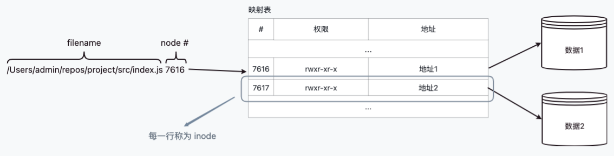
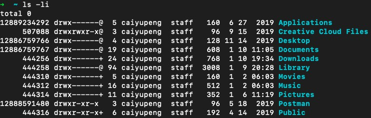
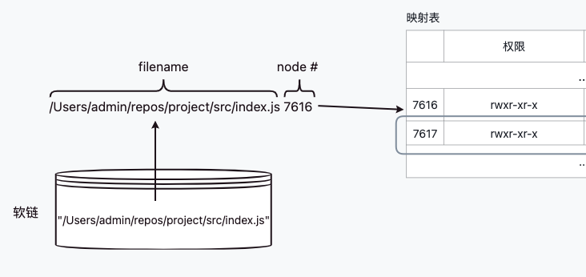
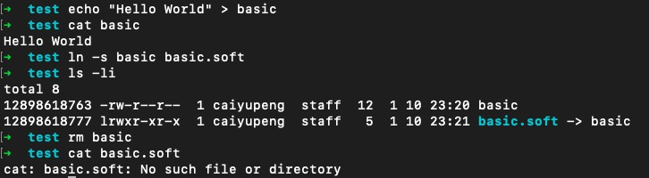
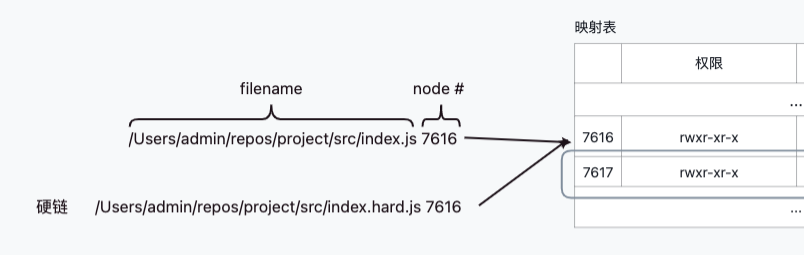
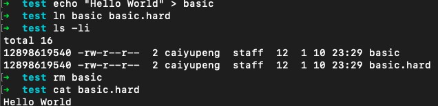

在操作系统中，通过文件名是如何寻找到存储的数据：  可以通过 ls -li 来查询权限和 inode 地址。  第一列即为 inode 地址
软链实际上是存储了文件名的文件。  由于只是单纯的指向，所以当目标文件被移动或删除时，软链会指空。 
硬链是同一 inode 的不同文件路径。  当原文件的路径被删除时，由于硬链还引用 inode，形成完整的文件结构，所以依旧可以访问到数据，只有全部硬链都被删除时，数据才会删除。 
 目录
目录